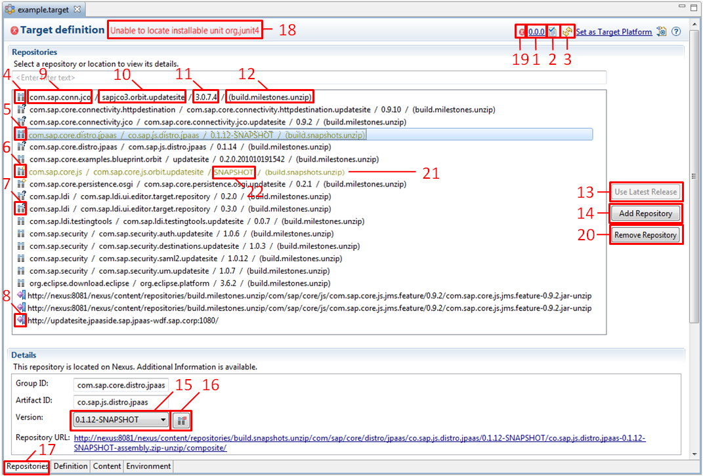

Tycho Target Editor
The Tycho Target Editor extends the default PDE target editor by a "Repositories" page.
The repositories page shows references to p2 repositories on Nexus by their Maven GAV, instead of showing their very long URLs.
Also, for a more convenient maintenance of target files, the editor retrieves the list of available versions for a referenced p2 repository on Nexus.
The details of the Tycho Target Editor repositories page:

Toolbar Actions
19) Dump resolution problem details into Console view
1) Update all referenced IU versions to generic latest version "0.0.0"
2) Open this target file in text editor
3) Refresh all caches
Repository Classification
4) Repository validated on Nexus. Version is the latest available released version provided on Nexus.
5) Available version of this repository could not be retrieved (e.g. Nexus unavailable or no such group/artifact)
6) Repository validated on Nexus. There are newer versions available on Nexus than specified in target file.
7) Available versions are currently retrieved from Nexus
8) Non-Nexus repository. Additional information is not available.
Maven Coordinates
9) Group ID of the repository
10) Artifact ID of the repository
11) Version of the repository specified in the target file
12) Nexus repository location where this p2 repository is located
Actions Available in the Button Group
13) Update all selected repository references on the left hand side to the latest available released version
14) Open wizard where a repository existing on Nexus can be added by entering its GAV. See Add Repository
20) Remove selected repositories and other repositories that are defined in the same location.
Details of a Selected p2 Repository
15) Select version from available versions.
The dynamic version substitutes SNAPSHOT and RELEASE will be resolved on Nexus to the the latest or the latest release version respectively.
Dynamic versions are only supported in the build.snapshots.unzip repository.
22) Dynamic version, representing the latest available version provided on Nexus. RELEASE would reference the latest available release version provided on Nexus. See also 15)
16) View error details (versions could not be retrieved from Nexus for given GAV)
Editor Tabs
17) LDI specific view on repositories in target file
Others
18) Problem marker in case of target definition resolution problems
21) Highlight snapshot repository references. Projects with snapshot repository references can not be released.